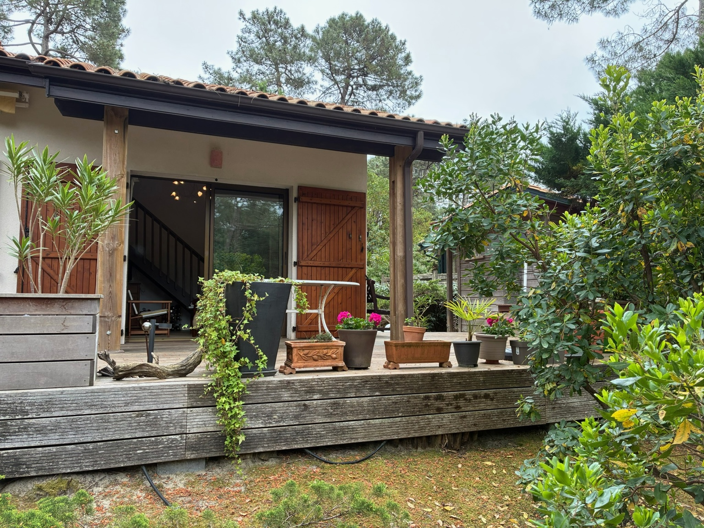
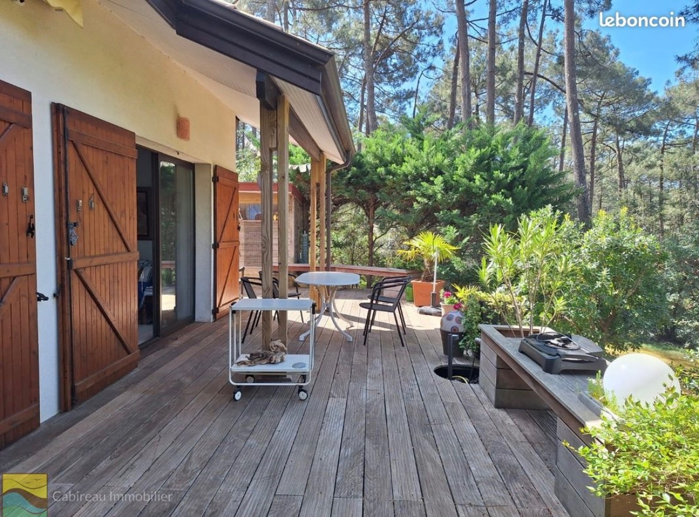
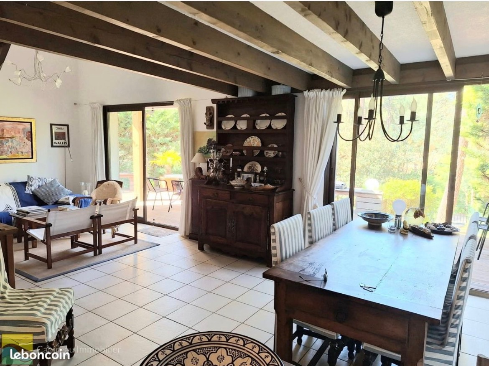
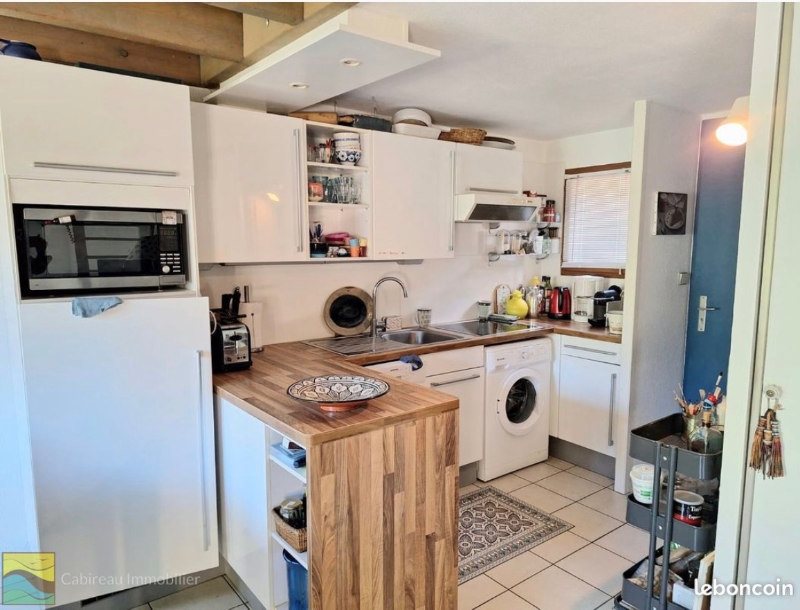
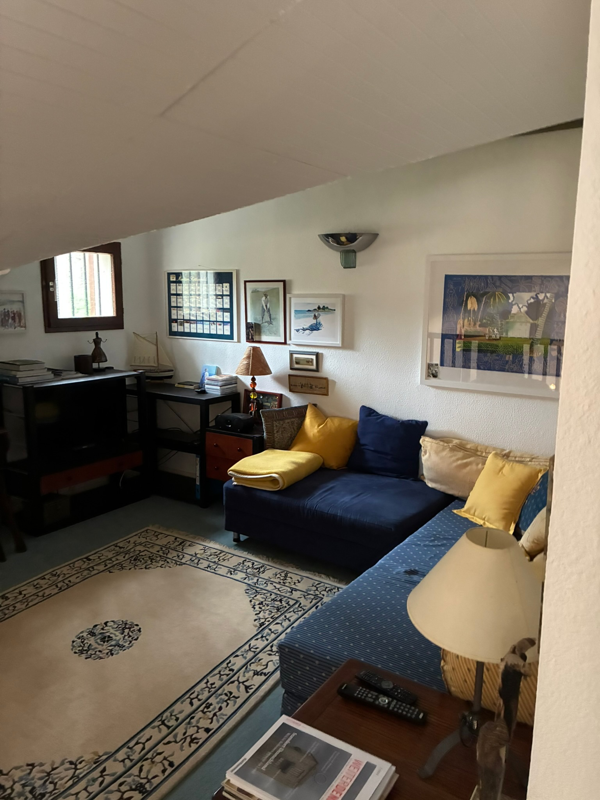
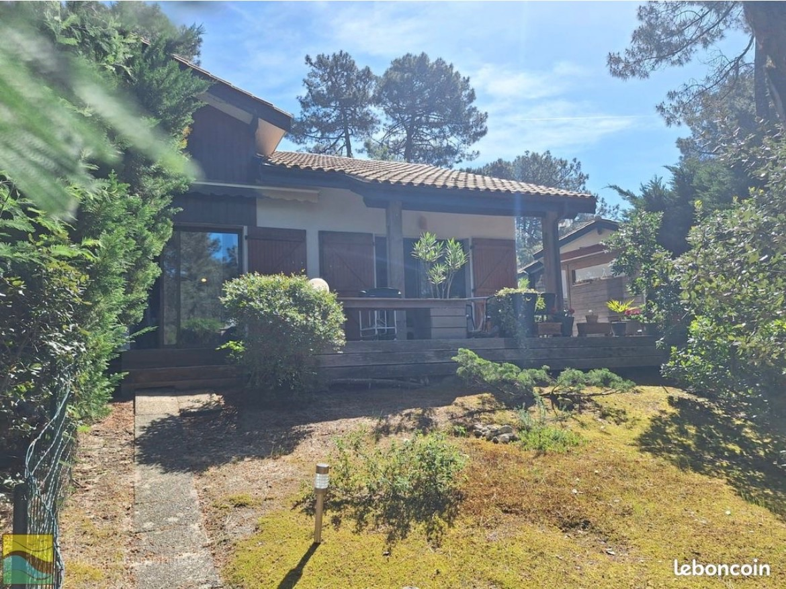

🌲
Jardin privatif
Un espace arboré sous les pins pour déjeuner, lire et profiter des soirées.
Une maison chaleureuse dans la pinède, avec terrasse, jardin privatif et piscine de la résidence, pour profiter pleinement de l'esprit de Lacanau.
Ici, on vit autant dehors que dedans : terrasse en bois, jardin arboré, lumière naturelle et beaux volumes sous les poutres.
La pièce de vie s'ouvre sur l'extérieur et communique avec la cuisine. Trois chambres permettent de profiter du séjour en famille ou entre amis, dans une ambiance simple, chaleureuse et tournée vers la nature.
Le cadre résidentiel, la piscine et la proximité du golf, des pistes cyclables, de l'océan et du lac en font une base idéale pour découvrir Lacanau.

Un espace arboré sous les pins pour déjeuner, lire et profiter des soirées.
La piscine de la résidence complète parfaitement les journées plage ou vélo.
Les pistes cyclables permettent de rejoindre facilement les principaux lieux de Lacanau.
Le golf de l'Ardilouse est tout proche, au cœur d'un environnement boisé.
Un aperçu de l'ambiance intérieure et extérieure. La galerie évoluera au fil des derniers aménagements.





La terrasse prolonge naturellement la maison. Le jardin en jouissance privative offre un cadre typiquement canaulais, entouré de végétation.
Depuis la maison, on profite de plusieurs visages de Lacanau : plages océanes, forêt de pins, pistes cyclables, golf et lac. Une destination où la voiture peut vite rester au repos.
Retrouvez les informations utiles pour la maison, la résidence et votre séjour à Lacanau.
Les derniers aménagements sont en cours. Les disponibilités, tarifs et modalités de réservation seront ajoutés ici prochainement.
Découvrir le livret d'accueil